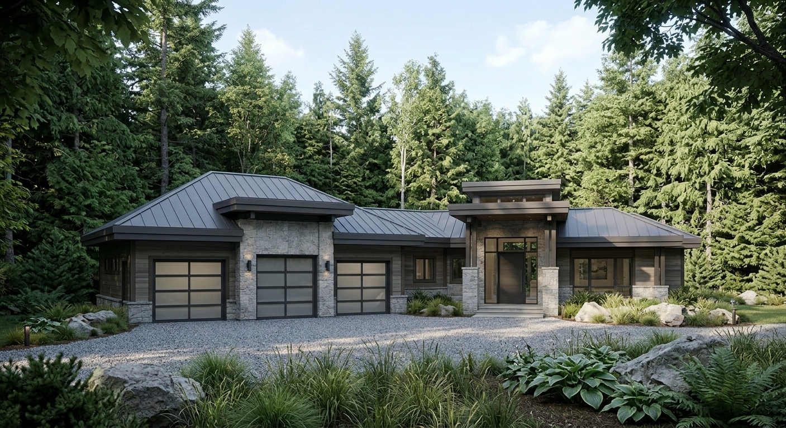
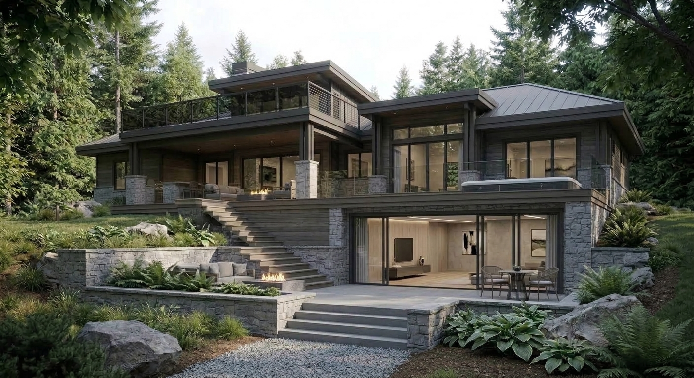
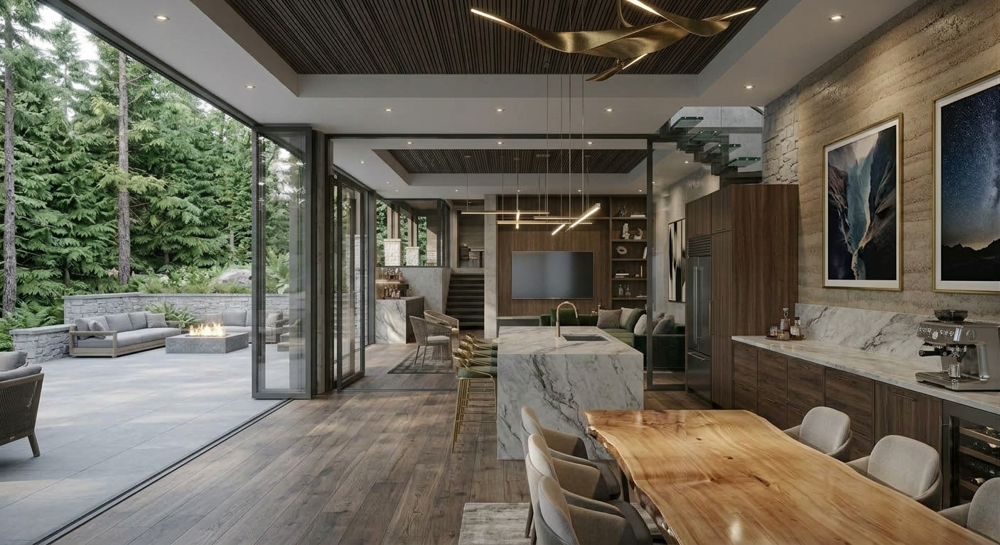
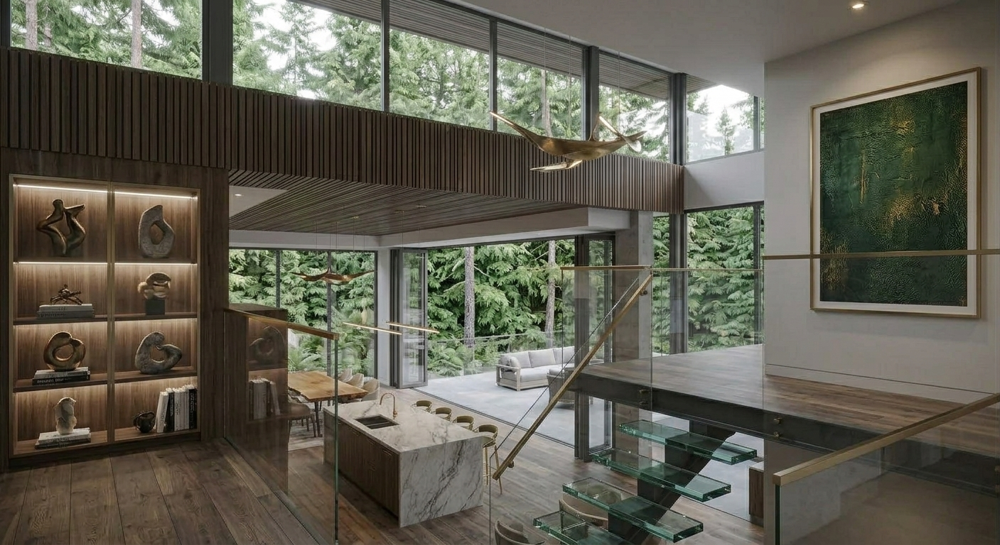

Renovation · Contemporary · 2024
A whole-home renovation that brings clean contemporary lines to a house nestled among the maples of Northern Michigan — modern in form, but rooted in its natural setting.
Northern Michigan
Whole-home renovation
2024
Renovation design & builder coordination
Exterior and interior views.




The Maple Grove Renovation began with a home that had good bones but felt disconnected from the forested site it sat on. The owners wanted to bring it firmly into the present — clean contemporary lines, brighter spaces, and a stronger relationship to the trees outside — while respecting the natural setting that drew them to Northern Michigan in the first place.
The renovation reimagines the home's exterior with a quieter, more contemporary palette: clean cladding, larger window openings, and simplified rooflines that let the surrounding maples take center stage. Inside, walls came down to create an open, light-filled plan that flows from kitchen to living to the outdoors. New finishes — white oak flooring, matte black fixtures, and stone countertops — bring warmth and restraint in equal measure.
The result is a home that feels contemporary without feeling out of place. Large windows frame the maple canopy like artwork, and the open plan invites the kind of gathering the owners always wanted. Every change was modeled in BIM and reviewed in 3D with the clients before construction began, so they could see exactly how each space would feel.